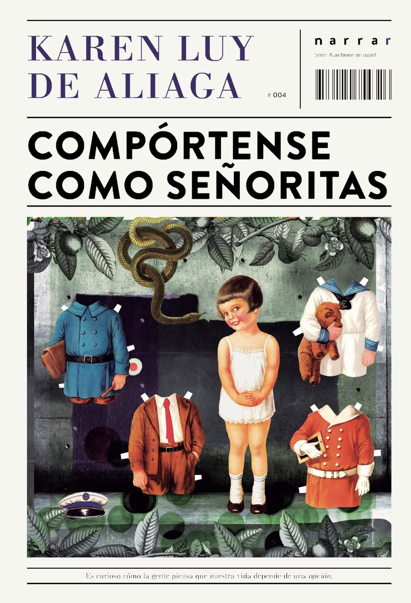
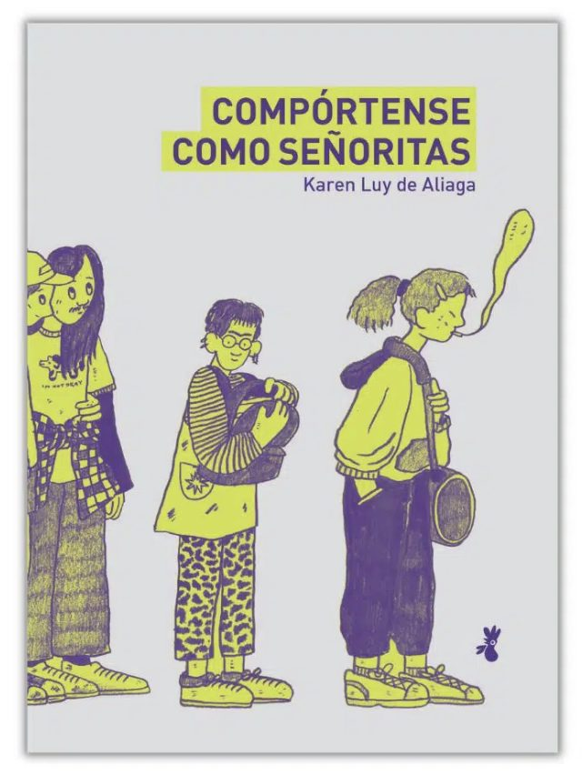
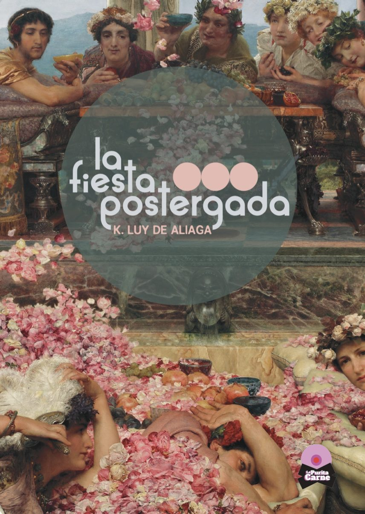
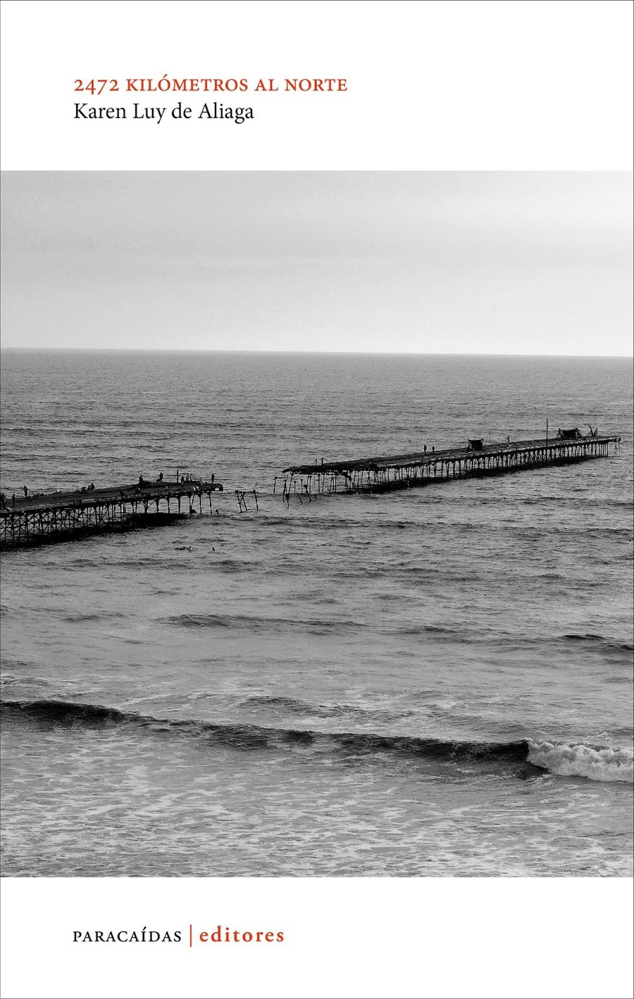

Narrativa infantil
Sanguche de Nubes
CompletoDos hermanos necesitan descubrir por qué a su tía le duele la panza al ver las noticias de ese país lejano en el que nació. Para aliviarla, idean cocinarle el mejor sanguche de nubes que se haya hecho.
Magíster en Escritura Creativa · Narradora, poeta y redactora creativa.
Tres proyectos que buscan casa editorial
Narrativa infantil
Dos hermanos necesitan descubrir por qué a su tía le duele la panza al ver las noticias de ese país lejano en el que nació. Para aliviarla, idean cocinarle el mejor sanguche de nubes que se haya hecho.
No ficción
Sudapalabras está hecho de parches de vida. Instantes cortos, flashes, fogonazos. De esos textos que abres el libro para leer uno al día. Un pequeño oráculo. Reflexiones sobre el cuerpo, las edades, los amores, la familia, los viajes... todo ello en relación con la escritura.
Novela
Muriel está aprendiendo a criar a su pequeño hijo. Se muda unos días a reparar la casa que ella y su esposa deben vender para abrir una escuela de tango queer. Pero las paredes empiezan a filtrar algo más que agua: el duelo postergado de su hermano y el escrache de su mejor amigo en Lima. Mientras busca el origen de las filtraciones, en compañía de un inusual nuevo amigo, Muriel empieza a entender que las grietas no están solo en las paredes.
Publicados

Novela · Edición Perú
Sello Narrar / Paracaídas Editores · Lima, 2019

Novela ilustrada · Edición Chile
Cocorocoq Editoras · Santiago, 2021 · ilustrada por Toto Duarte

Poesía
Editorial Madrepora · Lima, 2025

Poesía
Paracaídas Editores · Lima, 2015
Sobre mí
K. Luy de Aliaga (Kuy o simplemente Ka) es Magíster en Escritura Creativa de la UNTREF y Licenciada en Publicidad de la UPC. En 2004 estudió en la Escuela de Escritura Creativa de la CCPUCP con Iván Thays y Alonso Cueto.
Finalista de la Bienal Nacional de Cuento Copé 2016 con el relato «Conquiliología». Su novela Compórtense como señoritas recibió el Premio Crónicas de la Diversidad al Mejor Libro LGTBIQ+ del año.
Tiene textos publicados en distintas antologías y revistas:
Su obra ha sido traducida al inglés en The Offing (EEUU, 2021, traducción de Anna Vilner), al portugués en la Revista Parênteses (Brasil) y al francés por Aliados Literarios (Paris). Recientemente tradujo íntegramente su novela Compórtense como señoritas al inglés para presentarla en medios y concursos internacionales.
Actualmente trabaja como redactora creativa freelance, en proyectos de gestión cultural y en el final de su segunda novela. Ha sido gestora cultural del Stand Peruano en la Feria Internacional del Libro de Buenos Aires (FILBA) durante 2023, 2024 y 2025.
¿Quieres leer el manuscrito completo de alguna obra o saber más sobre los proyectos en curso?
✉ luy.de.aliaga@gmail.com